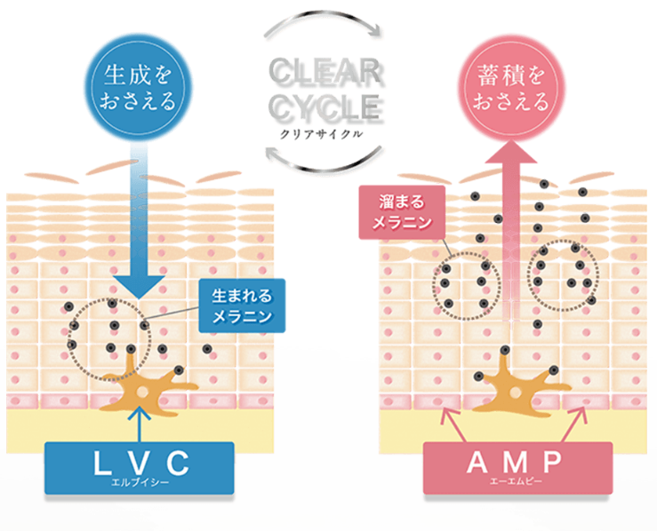
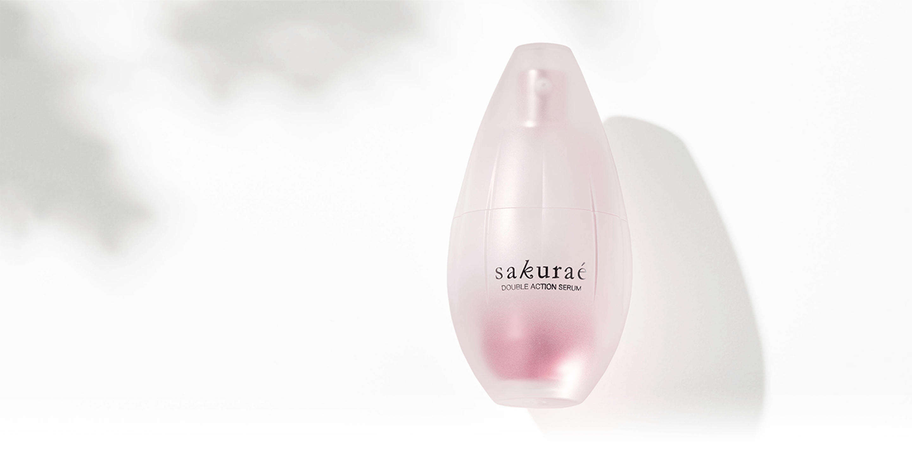

sakuraé
CLEAR CYCLE · PIN PUZZLE
溜まった粒を、
ラインより下へ。
抜けるピンは2本。流れを見て選ぼう。
↓ 左から入る↑ 右から出す
入口
出口
予備の粒
あと2本
どの2本を抜く？
目標まで あと46粒GOAL ↓
TRY AGAIN
粒が増えてしまった！
予備の粒を落とすと、もっと溜まる。
入口と出口の2本を選んでみよう。
✓
ふたつの流れで、
クリア。
GOAL
粒をピンクのラインより下に減らそう。
sakuraé大塚製薬
SAKURAE CLEAR CYCLE
作らせにくく。
溜めにくく。
シミ対策を、ふたつの視点で。
メラニンの「生成」と「蓄積」をおさえる。
サクラエの、ダブル美白。

しみ・そばかすを防ぐ、2つの美白効能。
※ゲームは仕組みのイメージであり、実際の肌や
作用・効果の速さを表すものではありません。
sakuraé大塚製薬
DOUBLE ACTION SERUM
シミ対策は、
生成と蓄積へ。
生成と蓄積をおさえ、しみ・そばかすを防ぐ。

薬用美白美容液医薬部外品
はじめての方限定
サクラエ 体験セット
14回分＋12回分増量
980円送料無料
本製品を初めてご購入の方・1世帯1セット限り。
送料は大塚製薬負担。
美白：メラニンの生成と蓄積をおさえ、
しみ・そばかすを防ぐ。
色をかさねる。想いをかさねる。
桜の襲
平安の衣装文化に生まれた
「桜の襲」という色合わせ。
「襲」を「え」と読み、サクラエへ。
日本の美意識を、
現代女性の素肌に。